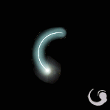

|
2002年5月29日
第十一章象牙塔地型抓圖，新魔法及道具資料
消息來源：Nue's
Lineage
天堂首席情報員Nue兄在他的網站Nue's
Lineage發表了韓國測試伺服器剛剛更新的檔案資料！以下是它們的詳細內容（可以用一個字形容：猛！）
第十一章象牙塔地型抓圖（非常漂亮的！一定要看！按此連結進入）
第十一章新道具資料
元素水晶 應該是妖精用來學元素魔法的道具
可能是寶石系列的新面貌
元素玉
死亡騎士全套裝備
惡魔全套裝備
由左至右分別是紫水晶項鍊,鑽石項鍊,綠寶石項鍊,紅寶石項鍊,珍珠項鍊

由左至右分別是食人巨魔腰帶,泰坦腰帶,多羅腰帶
由左至右分別是皮手套,石手套,水晶手套,雪人手套
由左至右分別是詛咒長靴,命運長靴,水底長靴
沙哈的弓

第十一章新魔法資料
新魔法,以下資料僅供參考*
抵抗魔法(Resist Magic) |
抵抗火屬性(Resist Fire) |
抵抗地屬性(Resist Earth) |
抵抗水屬性(Resist Water) |
抵抗風屬性(Resist Wind) |
抵抗元素(Resist Element) |
祝福武器(Bless Weapon) |
沉靜術(Silence) |
減輕負重(Decrease Weight) |
神聖武器(Holy Weapon) |
通暢精神(Clear Mind) |
消除魔法(Erase Magic) |
給予魔力(Mana Drain Give) |
奪取魔力(Mana Drain Take) |
冥思(Meditation) |

魔法反彈(Counter Magic) |
黑暗(Darkness) |
|
|
|
香港伺服器5月29日更新內容
原文：香港天堂官方網站公告
闊矛及闊劍的名稱作出修正。
原來之闊矛已改名為闊劍；而原來之闊劍已改名為闊矛。
另外，藍色藥水名稱變更。
於上年除夕活動(2001年12月31日)中，怪物所掉落之藍色藥水，在鑑定後名稱仍然為藍色藥水。
而現行從怪物身上可獵取之藍色藥水，在鑑定後名稱為回復魔力藥水。
詳細資料如下:
Potion of mana (藍色藥水)
重量: 31
鑑定前名稱: 藍色藥水
鑑定後名稱: 藍色藥水
有回復少許MP的作用。
Potion of mana regeneration (回復魔力藥水)
重量: 8
鑑定前名稱: 藍色藥水
鑑定後名稱: 回復魔力藥水
加快MP的回復速度，約10分鐘。
MP回復速度會增加，而增加量則和玩家的精神值成比例。
精神值較高的角色會有較快的MP回復速度。
香港伺服器定期維修時間變更
原文：香港天堂官方網站公告
伺服器之定期維護時間變更。
由5月30日起，維護時間更改為每星期一次 (逄星期三早上10:00-11:00)
。
如有其他特別情況需作臨時維護，會於網頁上作出公告。
美國伺服器5月29日更新內容
原文：美國天堂官方網站公告
中文翻譯：寶嘉康蒂網站
美國正式伺服器於5月29日更新下列事項：
1.修正迷魅後怪物名錯誤的BUG
2.修正死亡後從新開始還在原地的BUG
3.修正在火谷游標不易對準的BUG
4.修正讓使用者可以用空白鍵消除物品的BUG
5.修正寵物和召喚的怪物拿不到物品的BUG
6.伊娃祝福時間延長到半小時
7.慎水重量減輕了
8.用鑑定軸在項圈上可以顯示出狗的名字和等級了
9.玩家可以用新的垃圾桶修除不要的物品了(除了狗項鍊以外）
10.卡司特的沈默將會移除食屍鬼的麻痺了
11.在導遊從經產生出兔子一分鐘內不會再產生兔子
12.玩家將不能再給商人東西了，但賣東西能然可以
13.怪物身上東西滿了之後，東西將會掉地上，不再會消失了
14.寵物及召喚怪物頭上將會有血條
15.依照敏捷和等級來減防
敏18 每4級 -1防
16~17 5 -1
13~15 6 -1
10~12 7 -1
7 ~9 8 -1
|